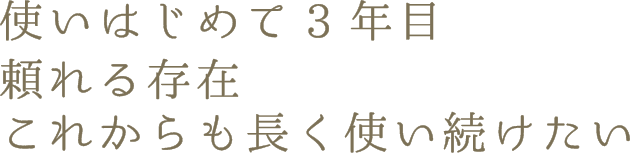
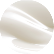

「肌、ととのう」イミニは、
植物発酵パントエア菌LPS*の力で
乱れがちな肌をととのえ、
強く美しい肌へと導きます。
LPS*1のチカラで“肌力*2”を
高めハリ・潤いのある、
年齢を感じさせない肌へ
イミニ リペアセラム
内容量：50ｍL（約2ヶ月分）
乱れがちな年齢肌、敏感肌に。パントエア菌LPS*1を高濃度*3配合した、これ1本 でスキンケアが完成するオールインワン美容乳液。自然免疫応用技研と商品を 共同開発しました。
- *1 パントエア/コメヌカ発酵エキス液(保湿成分)
- *2 水分と油分のバランスを整えること
- *3 イミニ内において

乾いたり、しぼんだり、乱れがちな
敏感肌、年齢肌をととのえ、健やかに。
30年を超える研究により
明らかになった
太古の昔から私たちと共存してきた
パントエア菌LPS*の力です。
*パントエア/コメヌカ発酵エキス液(保湿成分)
敏感な肌、年齢を重ねた
肌のためを
考え尽くしたら
オールインワンの乳液になりました。
成分の効果を最も優先し、
余計なものは入れず、
肌に負担をかけない
ことを突き詰めたどり着いたのが、
シンプルな「これ1本」のケア。
肌なじみの良さ、心地良さにきっと驚く、
特別な乳液です。
肌の乱れを感じたら、
この1本を使ってください。
山口智子さんとCMで共演
有森 裕子さん(55歳) 元マラソン日本代表

現役の時には自分とストイックに向き合っていた時もありました。ス キンケアは、日焼け止めすら一切使っていませんでした。今は自分に 合ったものを選択したい。ゆっくり自分の肌と向き合えて、無理なく 続けられるイミニが今の自分に合っています。忙しくてストレスある なぁと思っても、最近はとても自信が持てています。しかも1本で物足 りないなと感じたことは全く無くて、むしろこれ1本あればどんな時も 大丈夫と思えるくらい頼れる存在です。
※個人の感想であり、効能効果を示すものではありません。
※年齢は撮影時のものです。
LPS*1のチカラで“肌力*2”を
高めハリ・潤いのある、
年齢を感じさせない肌へ
イミニ リペアセラム
内容量：50ｍL（約2ヶ月分）
乱れがちな年齢肌、敏感肌に。パントエア菌LPS*1を高濃度*3配合した、これ1本 でスキンケアが完成するオールインワン美容乳液。自然免疫応用技研と商品を 共同開発しました。
- *1 パントエア/コメヌカ発酵エキス液(保湿成分)
- *2 水分と油分のバランスを整えること
- *3 イミニ内において
年齢とともに起こる肌トラブル
ケアしているのにどうして…？
その原因は
本来の“肌力*3”の低下にあります
※イメージ図
“肌力*3”とは、水分と油分の適性なバランスのこと。
肌力*3が高ければ年齢サイン*4の原因となる
乾燥や外部刺激から守ることができます。
しかし、年齢とともにこれらは衰え減少し、
肌力*3は低下する傾向に…。
肌力*3が低下すると…
肌力*3が低下すると肌内部から水分が逃げて
乾燥しやすくなり、
小じわ、くすみ、ハリの低下
といった年齢肌トラブルが次々に発生する原因にも。
美しい肌を保つためには
“肌力*3”に働きかけることが大切
*1 乾燥による *2 年齢を重ねた肌
*3 水分と油分のバランスを整えること *4 乾燥によるもの
そこで今注目されているのが パントエア菌 LPS
LPSとは
四半世紀以上の研究により、玄米から摂れるLPS（リポポリサッカライド）という成分が、
肌本来の力に働きかけ、年齢を感じさせない肌と、密接な関係があることが明らかになりました。
自然免疫応用技研と共同開発
イミニは自然免疫応用技研との共同開発で、独自の良質なLPS素材を採取することが可能に。自然免疫応用技研は19個もの特許を所得している最先端企業です。
開発者
自然免疫応用技研株式会社
代表取締役 工学博士 河内 千恵
乱れがちな肌をととのえる LPS*の持つチカラ
肌の弾力の基となっている、
コラーゲン、ヒアルロン酸、エラスチン。
この3つはどれも年齢とともに衰え減少します。
LPS*は、乾燥による小ジワを目立たなくし、
うるおいとハリのあふれる肌に導きます。
LPS*が年齢による肌トラブルのもとにアプローチ。
その働きはたった1/1000の量で
肌に効果的に働くといわれている「乳酸菌」の約1.5倍、
「酵母菌」のなんと約10倍にも。

人の肌は、水になじむ親水性と油になじむ
親油性の両方を持ち合わせています。
LPS*は親水性と親油性を併せ持つ両親媒性。
肌になじみやすく、
角層のすみずみまでしっかり届けます。
* パントエア/コメヌカ発酵エキス液(保湿成分)
LPS*1の持つチカラを
ぎゅっと凝縮したのが
イミニリペアセラム
イミニリペアセラムの特徴
POINT1
LPS*1(植物発酵パントエア菌LPS)を
高濃度*2配合
四半世紀にわたる研究から生まれた
LPS*1をこだわりの独自製法で高濃度*2配
合しています。あなた本来の肌力*3に働
きかけ、ハリ・透明感*4・潤いをサポートします。
POINT2 素早く浸透*5する上質な使い心地
肌のバランスに近い乳液タイプで、美 容成分が肌に優しく驚くほどすーっと 浸透*5。べたつかないのにしっとり。
POINT3 1本13役の多機能乳液
洗顔後のケアはこれ1本で完了。1本で13 役だから、まるでフルラインでお手入れ したような納得の満足感を叶えます。
*1 パントエア/コメヌカ発酵エキス液(保湿成分)
*2 イミニ内において *3 水分と油分のバランスを整えること
*4 キメが整った肌のこと *5 角層のまで
多機能乳液
イミニリペアセラム
とろけるように肌になじむ
手間をいとわず
磨き上げられた上質乳液
天然由来成分を使用し、通常の2倍以上もの時間をかけて丁
寧に磨き上げることにより、つけた瞬間に肌にすっとなじ
み、至福の時を感じられる上質な乳液が誕生しました。

1本13役
余計な負担はかけず、
肌への効果を最も優先した
シンプルケア
- 化粧水
- 保湿乳液
- パック
- 導入液
- 栄養クリーム
- エイジングケア*1美容液
- ブライトニング*2美容液
- ソフニング美容液
- 毛穴ケア美容液
- 目元用美容液
- マッサージクリーム
- 化粧下地
- デコルテトリートメント
使い方
洗顔後、手のひらに2プッシュ。顔の内側から
外側に向かってゆっくりなじませたら、手のひら
であたためるように包み込みます。
profile
山口 智子
女優1988年、NHK連続テレビ小説『純ちゃんの応援歌』でデビュー。映画『居酒屋ゆうれい』や、映画『スワロウテイル』、ドラマ『王様のレストラン』、ドラマ『ロングバケーション』、ドラマ『ハロー張りネズミ』、ドラマ『監察医 朝顔』など話題の作品で活躍。
有森 裕子
元マラソン女子日本代表2007年「東京マラソン2007」でプロマラソンランナーを引退。NPO法人 ハート・オブ・ゴールド設立・代表理事就任、公益財団法人スペシャルオリンピックス日本理事長、日本陸上競技連盟理事副会長など現在数多くの要職を務める。
news
-
2022.11.04
山口智子さんと有森裕子さんが出演する、オールインワン美容乳液「イミニ リペアセラム」の新テレビCMが、放映を開始しました。
-
2022.11.04
オールインワン美容乳液「イミニ リペアセラム」が、11月4日以降、順次全国のバラエティーストア等で取り扱いを開始します。
-
2022.11.03
新テレビCMの放映を記念して「イミニ リペアセラム」CM放映特典付きの限定セットの発売を開始しました。
-
2022.11.03
山口智子さんと有森裕子さんが出演する、オールインワン美容乳液「イミニ リペアセラム」の新テレビCMの記者会見を行いました。
LPS*1のチカラで“肌力*2”を
高めハリ・潤いのある、
年齢を感じさせない肌へ
イミニ リペアセラム
内容量：50ｍL（約2ヶ月分）
乱れがちな年齢肌、敏感肌に。パントエア菌LPS*1を高濃度*3配合した、これ1本 でスキンケアが完成するオールインワン美容乳液。自然免疫応用技研と商品を 共同開発しました。
- *1 パントエア/コメヌカ発酵エキス液(保湿成分)
- *2 水分と油分のバランスを整えること
- *3 イミニ内において
Q&A
-
Q1本でどのくらい持ちますか？
A 1回あたり2プッシュを朝晩2回ご使用される
場合、1本（50mL）で約2ヶ月分となりま
す。 -
Qどんな香りがしますか？
A ほんのりやさしい天然ローズの香りです。合成香料は使わず、天然由来100%*の香料を使用しています。
*香料として -
Q敏感肌なので
自分の肌に合うか不安です。A 専門機関で、敏感肌の方を対象にした肌試験を実施しておりますので、敏感肌の方でもご使用いただけます。
また、肌へのやさしさを考え、下記8つの成分は配合しておりません。
シリコン、合成ポリマー、石油系界面活性剤、鉱物油、着色料、防腐剤、合成香料、アルコール全てフリー
※敏感肌対象パッチテスト済み(すべての方にアレルギーや皮膚刺激が起こらないというわけではありません。) -
Q肌に合わなかったら
返品はできますか？A まずは、ミニサイズをご使用ください。
本品未開封で返品頂いた場合、全額返金させていただきます。(返送料はお客様負担。初回1回限り。商品到着後15日以 内。) -
Q全成分を教えてください。
A 水、BG、スクワラン、グリセリン、トリエチルヘキサノイン、ペンチレングリコール、パントエア/コメヌカ発酵エキス液、
（乳酸桿菌/サッカロミセス/ピチアアノマラ）/（チャ葉エキス/ハチミツ）発酵エキス液、アウレオバシジウムプルランス培養液、水添レシチン、ダイズステロール、アルカリゲネス産生多糖体、キサンタンガム、センチフォリアバラ花油、エチルヘキシルグリセリン -
Q注文後、どれくらいで届きますか？
A ご注文後、通常3～5日前でお届けします。
※沖縄県・一部離島へのお届けにはお時間がかかります。 -
Q定期コースは途中で
休止・解約はできますか？A 休止・解約が可能です。
お届け予定日の14日前までにマイページからお手続きいただくか、専用ダイヤルへお電話ください。
LSP*1のチカラで“肌力*2”を高めハリ・
潤いのある、年齢を感じさせない肌へ
*1 パントエア／コメヌカ発酵エキス液（保湿成分）
*2 水分と油分のバランスを整えること